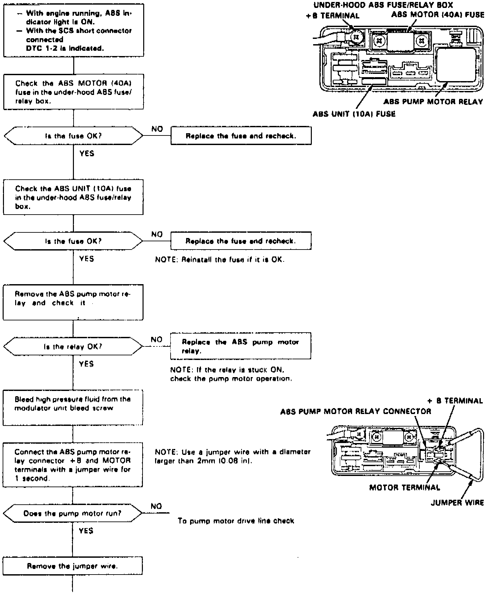
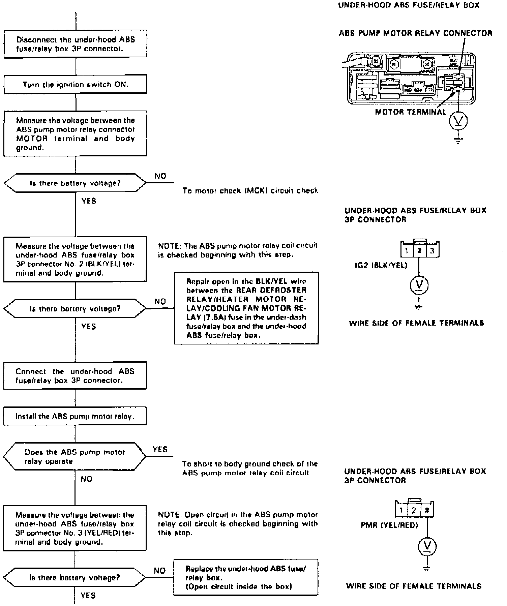
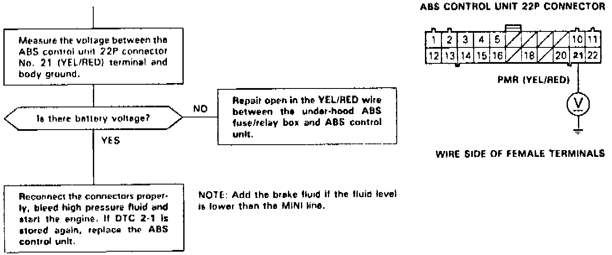
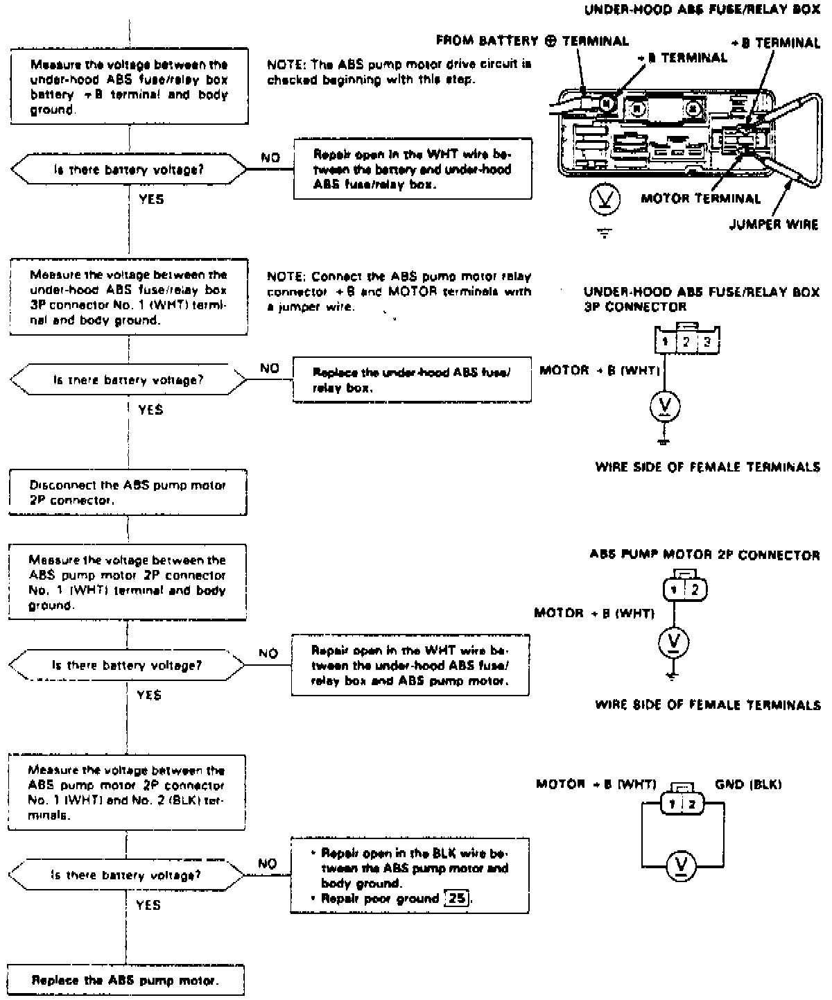
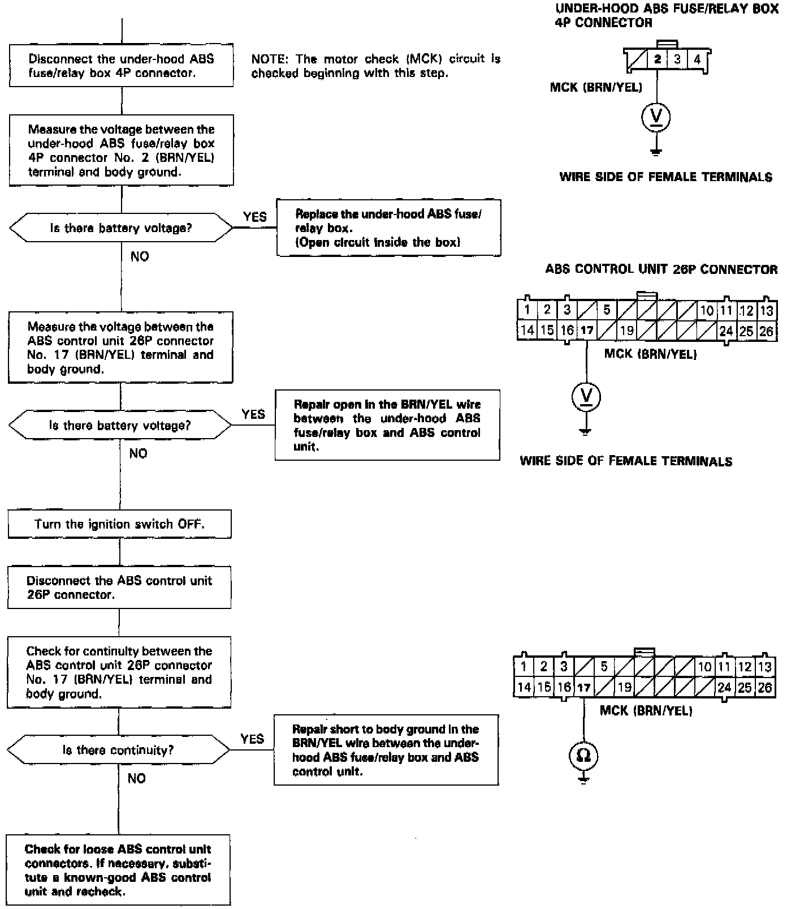
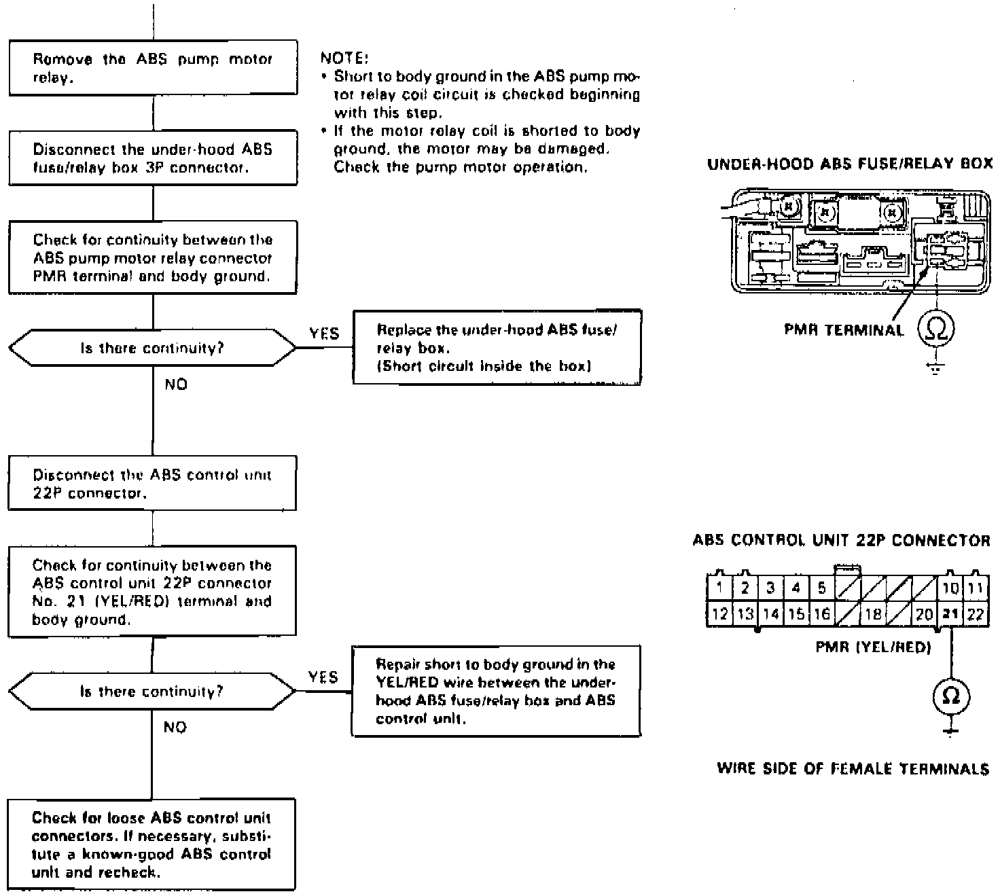

DTC 1-2
Fig. 28 Code 1-2: ABS Pump Motor (Part 1 Of 6):

Fig. 28 Code 1-2: ABS Pump Motor (Part 2 Of 6):

Fig. 28 Code 1-2: ABS Pump Motor (Part 3 Of 6):

Fig. 28 Code 1-2: ABS Pump Motor (Part 4 Of 6):

Fig. 28 Code 1-2: ABS Pump Motor (Part 5 Of 6):

Fig. 28 Code 1-2: ABS Pump Motor (Part 6 Of 6):

Diagnostic Trouble Code (DTC) 1-2: ABS Pump Motor Diagnosis
The ABS control unit checks the conditions at the pump motor relay drive (PMR) terminal and motor check (MCK) terminal during the initial diagnosis and regular diagnosis.
When the ABS control unit detects the following conditions during the diagnosis, it keeps the ABS indicator light on. When the following conditions are detected after the ABS indicator light goes off, the ABS control unit turns the ABS indicator light on again.
- Battery voltage at the MCK terminal with an OFF signal at the PMR terminal
- 0 V at the MCK terminal with an ON signal at the PMR terminal
Possible causes:
- Open circuit or short to body ground between the REAR DEFROSTER RELAY/HEATER MOTOR RELAY/COOLING FAN MOTOR RELAY (7.5 A) fuse and under-hood ABS fuse/relay box
- Open circuit or short to body ground in the PMR circuit inside the under-hood ABS fuse/relay box
- Faulty pump motor relay
- Open circuit or short to body ground in the PMR circuit between the under-hood ABS fuse/relay box and ABS control unit
- Open circuit between the battery and under-hood ABS fuse/relay box
- Blown ABS MOTOR (40 A) fuse
- Blown ABS UNIT (10 A) fuse
- Open circuit or short to body ground in the motor drive circuit and MCK circuit inside the under-hood ABS fuse/relay box
- Open circuit or short to body ground in the MCK circuit between the under-hood ABS fuse/relay box and ABS control unit
- Open circuit or short to body ground between the under-hood ABS fuse/relay box and pump motor
- Faulty pump motor
- Open circuit between the pump motor and body ground or poor ground
- Faulty ABS control unit